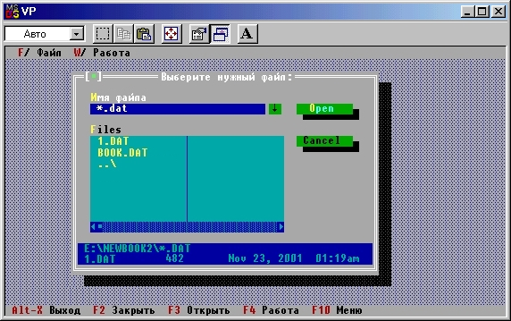

|
|
|
|
Программирование диалоговых запросов
В обработчике событий TNotebook.HandleEvent мы предусмотрели вызовы нескольких процедур, с помощью которых реализуются конкретные действия программы. Настала пора запрограммировать эти действия.
Начнем с процедуры FileOpen. Ее задача - выбрать один из возможных файлов с данными и подготовить его к работе. Конечно, программу можно было бы сделать менее гибкой, раз и навсегда «привязав» ее к какому-то одному файлу, скажем, с именем notebook.dat. Но даже и в этом случае следует решить проблему с местоположением файла данных, а также определить, что должна делать программа, если нужный файл не найден. Наша программа будет весьма гибкой в этом отношении: она позволит указать интересующий нас файл мышью или клавишами курсора, либо ввести имя файла с помощью клавиатуры или взять его из буфера ранее введенных имен. Иными словами, поведение нашей программы будет в точности повторять поведение среды Турбо Паскаль в момент нажатия на клавишу F3.
Если Вы когда-либо программировали подобные действия в Турбо Паскале, Вы по достоинству оцените простоту их реализации в Turbo Vision:
Procedure FileOpen; {Открывает файл данных}
var
PF: PFileDialog; {Диалоговое окно выбора файла}
Control: Word;
s: PathStr;
begin
{Создаем экземпляр динамического объекта:}
New(PF, Init('*.dat','Выберите нужный файл:','Имя файла',fdOpenButton,0));
{С помощью следующего оператора окно выводится на экран и результат работы пользователя с ним помещается в переменную Control:}
Control := DeskTop.ExecView(PF);
{Анализируем результат запроса:}
case Control of
StdDlg. cmFileOpen, cmOk:
begin {Пользователь указал имя файла:}
PF.QetFileName(s) ; {s содержит имя файла}
{-----------} {Открыть файл}
end;
end; {case Control}
Dispose (PF, Done) {Уничтожаем экземпляр}
end; {FileOpen}
Для реализации этого фрагмента необходимо указать имя модуля StdDlg в предложении Uses - в этом модуле описан тип PFileDialog и предусмотрены все необходимые методы для работы с ним. Кроме того, в программе используется переменная S типа PathStr. Этот тип описан в модуле DOS - сошлитесь также и на него. Сделайте нужные изменения в тексте программы, не раскрывая пока сущности действий
{Открыть файл}
запустите программу на счет и нажмите клавишу F3 - экран приобретет вид, показанный на рис.15.3.
Тип PFileDialog - это указатель на объект TFileDialog, создающий и обслуживающий стандартное диалоговое окно выбора файлов. Все действия по созданию и использованию диалогового окна, показанного на рис.15.3, реализуются двумя операторами:
NewfPF, Init('*.dat','Выберите нужный файл:',
'Имя файла',fdOpenButton, 0));
Control := DeskTopA.ExecView(PF);

Puc. 15.3. Диалоговое окно выбора файлов
Первый оператор инициирует новый экземпляр объекта TFileDialog. Три строковых параметра обращения к конструктору Init этого объекта задают, соответственно, маску выбираемых файлов ('*.dat'), заголовок диалогового окна ('Выберите нужный файл:') и заголовок окна ввода ('Имя файла'). Параметр fdOpenButton указывает на необходимость включить в диалоговое окно кнопку Open. Последним параметром задается идентификатор протокола ввода. Доступ к этому протоколу открывается кнопкой [|] справа от окна ввода. Сам протокол хранится в куче в виде последовательности вводившихся ранее текстовых строк. Идентификатор протокола ввода позволяет при необходимости использовать один и тот же протокол в разных диалоговых окнах.
Второй оператор
Control := DeskTop.ExecView(PF);
помещает вновь созданное окно в основное поле экрана программы (ссылка DeskTop) и инициирует диалог с пользователем. Результат диалога возвращается в переменной Control, значение этой переменной анализируется оператором
case Control of
.......
end;
Если Control содержит коды команд cmOk или cmFileOpen, то с помощью метода GetFileName объекта TFileDialog в переменную S записывается полное имя файла (с предшествующим путем).
В методе TFileDialog.GetFileName (var Name: Pathstr) параметр обращения должен иметь тип PathStr. Этот тип определен в модуле DOS,- вот почему нам понадобилось сослаться на этот модуль в предложении Uses. Если указать компилятору на необходимость смягчить проверку строковых типов (директива компилятора {$V-}), то при обращении к GetFileName можно использовать переменнуюлюбого строкового типа, в том числе String.
Перед выходом из процедуры FileOpen экземпляр объекта TFileDialog уничтожается (удаляется из кучи) обращением к деструктору Done.
По описанной схеме в Turbo Vision создаются и используются любые другие диалоговые окна.
Для реализации диалогового запроса необходимо создать диалоговое окно и с помощью функции ExecView объекта-владельца (программы) инициировать диалог с пользователем. Результат, возвращаемый этой функцией, будет содержать выбранную пользователем команду.
Чтобы запрограммировать действия, связанные с открытием файла, следует вначале решить, какие именно данные он будет содержать. Напомню, что мы разрабатываем диалоговую программу управления «записной книжкой». Структура типичной записи в такой книжке состоит из трех полей: имя, телефон, адрес. Учитывая это, будем считать, что данные в файле хранятся в виде следующих записей:
const
LName = 25;{Длина поля Name}
LPhone= 11;{Длина поля Phone}
LAddr =40;{длина поля Addr}
type
DataType = record {Тип данных в файле}
Name : String[LName]; {Имя}
Phone: String[LPhone] {Телефон}
Addr : String[LAddr] {Адрес}
end;
Поместим эти строки в начале программы, а перед описанием процедуры FileOpen вставим определения следующих глобальных переменных:
var
DataFile: file of DataType; {Файловая переменная}
OpFileF : Boolean; {Флаг открытого файла}
Дополним текст процедуры FileOpen такими строками:
case Control of
StdDlg.cmFileOpen,cmOk:
begin
PFA.GetFileName(s);
Assign(DataFile,s); {Отсюда начинаются новые строки}
{$I-}
Reset(DataFile);
if lOResult <> 0 then
Rewrite{DataFile); OpFileF := IOResult=0;
{$I+}
if OpFileF then
begin
DisableCommands(WinCom2);
EnableCommands(WinComl)
end
end;
end;
С помощью оператора DisableCommands мы временно запрещаем набор команд, указанный в константе WinComl. Эта константа в нашем случае должна содержать команду стОреn; ее определение нужно включить сразу за определением константы WinComl:
const
WinComl: TCommandSet = [cmSave, cmWork];
WinCom2: TCommandSet = [cmOpen];
Обращение к процедуре EnableCommands разрешает использовать команды cmSave vicmWork.
|
|
|
|